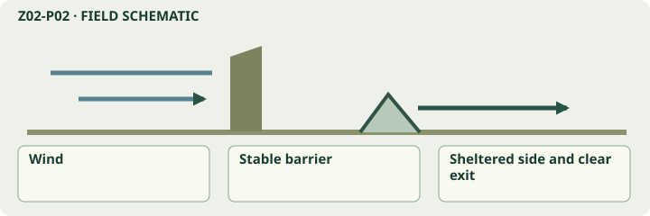

Z02-P02 · Shelter and housing
Block wind before building a roof
Reduce exposure using an available barrier while keeping an escape route.
When it applies · Cold wind or blowing snow. Stable site already selected.
Equipment · Existing wind barrier, insulating layers and optional shelter material made for outdoor use.

Actions
- Choose the sheltered side of an existing stable barrier. Check that you remain clear of runoff and falling material.[E05, E04, ED]
- Keep the exit easy to reach. Put on dry layers and protect yourself from the ground while conditions allow.[E05, E10]
- Reassess as wind direction or drifting changes. Seek a safer shelter if the barrier no longer works.[E05, ED]
Verify · Group members can move out without climbing over a barrier. Clothing and bedding are staying dry.[ED, E05]
Stop or change course · Leave unstable cover or a blocked exit. Keep fuel-burning equipment outside enclosed shelters.[ED, C05]
Evidence and editorial notes
- C05 · CPSC · Portable Heaters and Camping Equipment
- Carbon monoxide poisoning from portable camping equipment · Tents, campers, vehicles and other enclosed spaces
Fuel-burning camping equipment can lead to fatal carbon monoxide buildup in enclosed spaces.
Primary source · checked 2026-11-24 - E04 · NWS · Flood Safety: Key Points for Camping and Hiking
- Before and during camping; know your surroundings · Stream valleys and runoff channels subject to flash flooding
Choose higher ground away from water channels. Rain far upstream can drive rapid flooding.
Primary source · checked 2026-11-24 - E05 · NWS · What To Do If You're Caught in a Winter Storm
- Outside and find shelter · Cold, wet or windy winter conditions
Block wind, stay dry and keep off cold ground. Keep exposure reduction separate from making a fire.
Primary source · checked 2026-11-24 - E10 · NWS · What To Do If You're Caught in a Winter Storm
- Outside > Protect yourself from frostbite and hypothermia · Outdoor winter storm
Keep clothing dry and avoid overexertion. Wetness accelerates cooling.
Primary source · checked 2026-11-24
Source lineage · B012-P10.